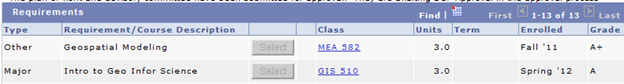

MGIST Advising FAQ
Here is a collection of information based on questions frequently asked by MGIST Advisees.
- I’ve just found out that you’re my adviser. Do I need to schedule a meeting with you?
No. Since this is a non-thesis program, advising is not complicated and can usually be accomplished via email or phone. You will need to fill out a plan of work and committee list online. If you have questions about courses, you can contact your adviser with questions.
- How can I connect with other NCSU GIST students and see announcements relating to jobs, scholarships, conferences, and other GIS events?
Join the GIST program facebook page.
- What is a plan of work?
The plan of work is schedule of courses that you’ve taken already or plan to take. The online interface at MyPack Portal allows you to fill in a table. The course number and semester should be placed in the ‘Class’ and ‘Enrolled’ columns as shown here:

Transfer credits should be listed with course number 999.
- Which MGIST electives are available?
See the electives list under 'Related Courses' on the 'Courses' page.
- Can I use an elective course that is not on the ‘Electives list’?
These decisions are made by advisers on a case-by-case basis. The course must have some strong GIS components to be used as an elective in the MGIST degree. If the course has some GIS components or there is some other compelling reason this course would be useful for your degree, gather information to support your case, such as a syllabus with GIS-related topics and provide it to your adviser.
- Can my adviser change my plan of work?
No. The adviser does not have access to alter the plan.
- How can I change my plan of work after it has been approved?
The system is not designed to allow for changes after approval. However, if for some reason, you must change your plan of work after it has been approved, contact Anju Singh. She can modify the system so that you are able to alter the plan of work and submit it again.
- I have submitted or resubmitted my plan of work and I'm awaiting approval. Should I email my adviser? No. Your adviser automatically receives an email when the plan is submitted. It must first be approved by the adviser. After that it must be approved by the department head and the Dean's office. The student only receives notification once all of these levels of approval are complete.
- Can I use NCSU master's level GIS courses that are not in the core list as electives?
Yes. For example, GIS 521 can be used as an elective.
- When I file my plan of work, I have to select a committee. Who do I place on my committee?
Your committee should consist of exactly one person—your adviser.
- When do I need to fill out my plan of work?
The plan of work should be completed by half-way through the MGIST. In other words, by the time you have completed 15 credits, it should be submitted. For people going from the certificate the the master's, this usually means you should do it as soon as possible during your first semester with master's status.
- I submitted my plan of work. Do I need to inform my adviser?
No. The system automatically informs your adviser when your plan of work is submitted. Once she approves it, it needs to be approved on several administrative levels. You will be notified only when all levels of approval are complete.
- I have completed 4 GIS courses at NCSU as a NDS/Certificate student. How do I ‘transfer’ these into the Master’s Program?
Fill in the courses as part of your plan of work. The ‘transfer’ will happen automatically when they are included as part of your Plan of Work.
- How do I get a graduate-level GIS course transferred from another university?
First, read the NC State Graduate School guidelines for transfering credits. Then send a syllabus for the course you'd like to transfer to your adviser. The syllabus or additional course materials need to provide adequate information about the subject matter in the course. If your adviser approves the transfer via email, save this email correspondence. Once approved, transfer courses can be listed in the course on the plan of work and no further paperwork is required.
- How many GIS course can be transferred from another university?
At most 12 credit hours.
- Where can I find the GIS core course syllabi on the web?
The core courses provide a syllabus accessible on the web at all times. These persistent materials are linked here: gis.ncsu.edu > Academic > Courses
 Return to Laura Tateosian's homepage. Return to Laura Tateosian's homepage. |